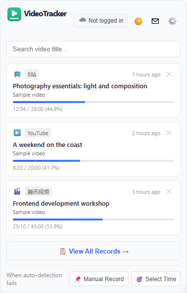

VideoTracker automatically records your watch progress across video sites with one-click resume. Local by default, with optional end-to-end encrypted cloud sync.
For Chrome / Edge · Free & Open Source · Automatic recording is off by default
Features describe the current source. See the download page for published versions, or build from source for new features.

Simple, efficient, privacy-first video progress management
Enable automatic recording in settings to save progress after your viewing threshold. Off by default; local recording needs no account.
Save with Ctrl+Shift+V, or Command+Shift+V on Mac. Manual saving works even when automatic recording is off.
Open a record to return to its video and restore your position in supported players. Compatibility depends on the website.
Default 30 seconds before recording. Customizable: 0 / 10 / 30 / 60 / 120 seconds.
Search titles in the popup. Filter the records page by title, episode and viewing date, with individual or batch deletion.
Sign in, set a sync encryption password, and upload encrypted watch records and site rules for safe cross-device restore.
Add a domain or webpage URL to stop automatic recording for it and its subdomains. Remove it to restore recording; saved records stay.
Send up to 500 characters, one optional PNG/JPG/WebP image up to 5 MB and an optional email. Confirm the purpose before your first submission.
Choose Chinese or English, with a light, dark or system theme for your records and settings.
Built-in adapters for mainstream video platforms with precise video info extraction
Save and resume videos without an account
Download a published package and follow the installation guide. Local recording needs no sign-in.
Use the shortcut to save immediately, or enable automatic recording and choose a viewing threshold.
Choose a video from the popup or records page to open its original page and resume in a supported player.
Sign in and enable encrypted sync when you need another device. Use the extension's feedback page to report a problem.
Local-first, encrypted sync only when you choose
Free, open source, no ads. Make binge-watching easier.